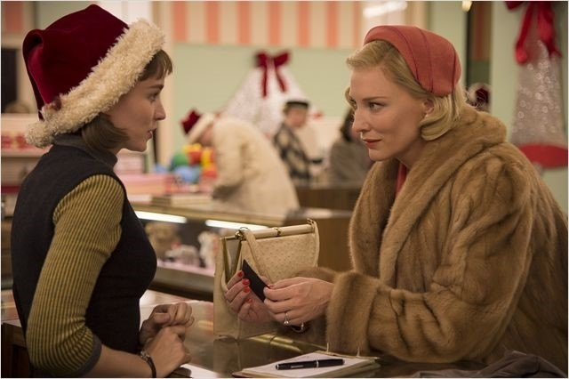

2.줄거리:그리고 시간은 두 사람이 처음 마주친 과거로 거슬러 올라갑니다
1950년대, 크리스마스를 앞둔 맨하튼의 백화점은 아이들을 위한 장난감을 사러 온 손님들로 북적이고
직원 테레즈는 쏟아져들어온 수많은 손님 중 어쩐지 시선을 잡아끄는, 고혹적 분위기의 여자를 발견합니다

우아한 차림으로 기차모형을 물끄러미 바라보던 캐롤의 시선도 테레즈 쪽을 향하고
두 사람은 짧은 순간이지만 서로에게서 시선을 돌릴 줄 모릅니다
4살짜리 딸아이의 선물을 사러 온 캐롤은 아이가 갖고 싶어했던 인형은 이미 품절이라는 테레즈의 설명을 듣고
그럼 4살때 어떤게 제일 갖고 싶었냐고 테레즈에게 물어보자, 그녀는 기차모형이 정말로 갖고 싶었다고 말합니다
캐롤은 기차모형을 구매하고, 배송을 위해 자신의 이름과 주소를 적고 백화점을 빠져 나가죠
기차모형을 구매한날, 캐롤이 잊고 간 장갑을 테레즈가 돌려준 일을 계기로 두 사람은 사적인 만남을 가지게 되고
두 사람은 서로에게 강한 끌림을 느끼죠
캐롤은 테레즈에게 "당신은 하늘에서 떨어진 사람같아요" 라고 말합니다